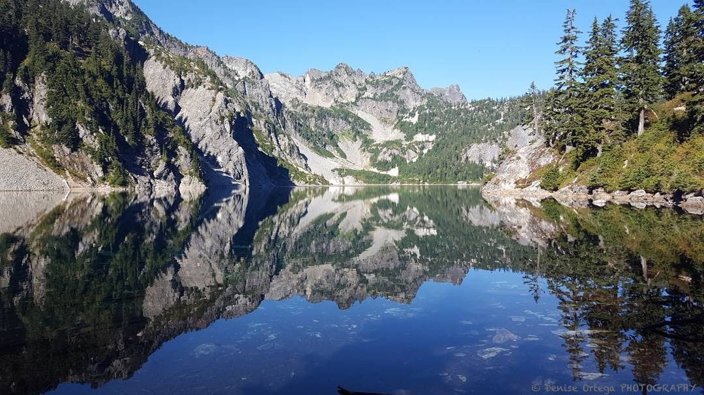

Washington

Snow Lake - 7.2 mi - 1800 ft gain
This was taken on a clear spring day. The weather was so mild and the wind so calm that the surface of the lake was undisturbed. With no ripples in sight, the reflection of the mountains on the opposing side was a perfect mirror image.
The trail heading up to the lake is a bit tricky, as there are lots of loose rocks. Often the trail is rocky and uneven, so make sure you bring proper footwear on this hike.
The last part of the trek is on a gradual but sustained, rocky incline. Once you reach the top of this last switchback, there is a great viewpoint of the lake. From here you'll have to descend and lose most of your elevation gain to get down to the lakefront. The descent is well worth it. The lakefront is pristine and there is a lot of space for you to spread out and explore.
Skyscraper Mountain - 8 mi - 1300 ft gain
I took this stunning picture on the hike to Skyscraper Mountain. This spot is right before the turn up the ridge to Skyscraper. There is a great view of Mt Rainier if the day is clear.
Turning right from this spot leads you up the ridge and to a short scramble of Skyscraper Mountain. The scramble consists of 90% climbing up the talus and scree on the side of the mountain. However, there is a small part that is fairly exposed. The use of a pole might be beneficial here to keep your balance. After you make it past the exposed section, you are free to go right up to the summit.
At the summit, there are even better views of Rainier. There was also a lively chipmunk scurrying on the rocks around us. We also spotted a marmot and a few goats on this trail.
Klahanne Ridge - 5 mi - 1700 ft gain
This was taken at a major junction on Klahanne Ridge. We took the steep and short Switchback trail to get to this junction. However, it is also accessible (perhaps with considerably less effort) from the Hurricane Ridge visitors center, further up the road.
At this junction we spotted a few eagles and a family of mountain goats grazing in the Heart of the Hills.
We continued on to Lake Angeles. We stopped for lunch at a knoll, which is characterized by a rather steep uphill climb. The use of poles here was helpful as the trail gets a bit rocky and poles are useful to keep your balance. From here you can see the rest of the ridge that goes on to Lake Angeles. You can continue on or use this as your turn around point.